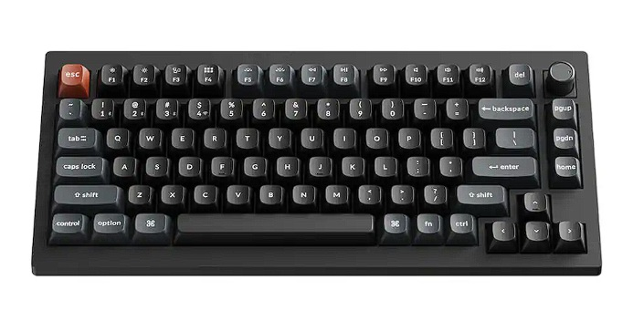
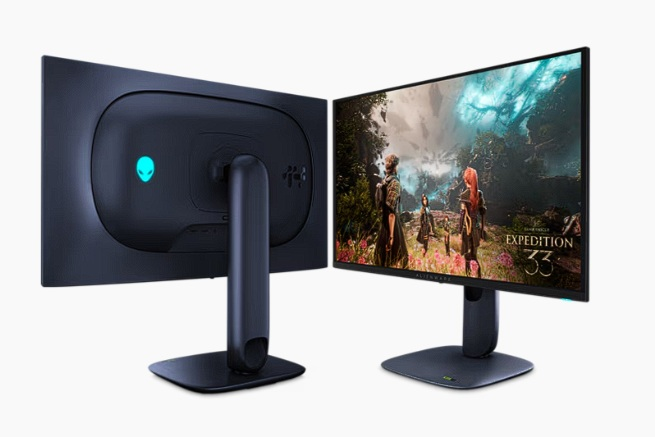

1. I'm clearing out my home office setup and everything must go! The tower is the centerpiece
of the collection — a custom build with plenty of power for gaming or productivity work.
It's barely a year old and has been meticulously maintained.
Please note: It includes all components, including the high-performance graphics card and ample storage.
Learn more about this item by clicking the links below:
Computer Details
Lian Li

2. The keyboard is a mechanical with Cherry MX switches, offering a satisfying typing experience.
It's been used primarily for office work and has seen minimal use.

3. Both of the monitors are a 27-inch 4KOLED display with excellent color accuracy and contrast.
They also feature a 240hz refresh rate, providing a smooth visual experience for gaming and multimedia applications.
Here are some links to things I'm selling:
Please note: The link to the computer only leads to the product page for the tower case, not the complete build.